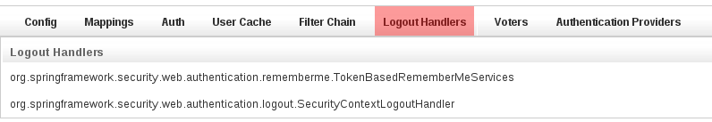

Spring Security AppInfo Plugin - Reference Documentation
Authors: Burt Beckwith
Version: 2.0-RC2
Table of Contents
1 Introduction to the Spring Security AppInfo Plugin
The Spring Security AppInfo plugin provides a UI to inspect your security configuration.If you already have the spring-security-ui plugin installed you shouldn't install this plugin, since it's part of that plugin. It's split out here into its own for users who want this information but not the entire UI plugin.
Release History
- October 5, 2013
- 2.0-RC2 release
- February 13, 2010
- initial 1.0 release
2 Security Configuration UI
The plugin has one controller (SecurityInfoController.groovy) and is available by navigating to /appname/securityInfo. There are eight menus:Configuration
The Configuration menu item displays all security-related attributes inConfig.groovy. The names omit the grails.plugin.springsecurity prefix:
Mappings
The Mappings menu item displays the current request mapping mode (Annotation, Requestmap, or Static) and all current mappings:
Current Authentication
The Current Authentication menu item displays yourAuthentication information, mostly for reference to see what a typical one contains:
User Cache
The User Cache menu item displays information about cached users (this feature is disabled by default):
Filter Chains
The Filter Chains menu item displays your configured Filter chains. Typically there is just one chain, applied to all URLs It is possible to have multiple URL patterns each with its own filter chain, for example when using HTTP Basic Auth for a web service.
It is possible to have multiple URL patterns each with its own filter chain, for example when using HTTP Basic Auth for a web service.Logout Handlers
The Logout Handlers menu item displays your registeredLogoutHandlers. Typically there will be just the two shown here, but you can register your own custom implementations, or a plugin might contribute one or more:Voters
The Voters menu item displays your registeredAccessDecisionVoters. Typically there will be just the three shown here, but you can register your own custom implementations, or a plugin might contribute one or more:Authentication Providers
The Authentication Providers menu item displays your registeredAuthenticationProviders. Typically there will be just the three shown here, but you can register your own custom implementations, or a plugin (e.g. LDAP) might contribute one or more:
3 General Notes
Securing Access
Be sure to guard access to the/securityInfo url since only authorized users should have access to this information. If you're using annotations, you can register mappings in the staticRules property in Config.groovy:grails.plugin.springsecurity.controllerAnnotations.staticRules = [ … '/securityinfo': ['ROLE_ADMIN'], '/securityinfo.*': ['ROLE_ADMIN'], '/securityinfo/**': ['ROLE_ADMIN'], … ]
new Requestmap(url: '/securityinfo', configAttribute: 'ROLE_ADMIN').save() new Requestmap(url: '/securityinfo.*', configAttribute: 'ROLE_ADMIN').save() new Requestmap(url: '/securityinfo/**', configAttribute: 'ROLE_ADMIN').save()
interceptUrlMap approach, add mappings to that property in Config.groovy:grails.plugin.springsecurity.interceptUrlMap = [ … '/securityinfo': ['ROLE_ADMIN'], '/securityinfo.*': ['ROLE_ADMIN'], '/securityinfo/**': ['ROLE_ADMIN'], … ]